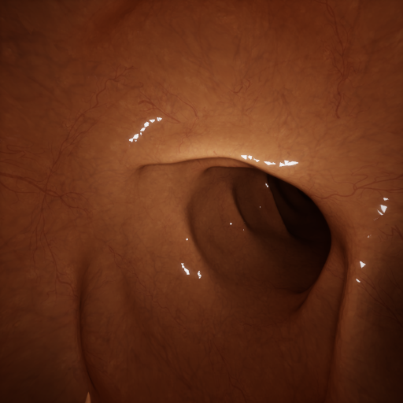
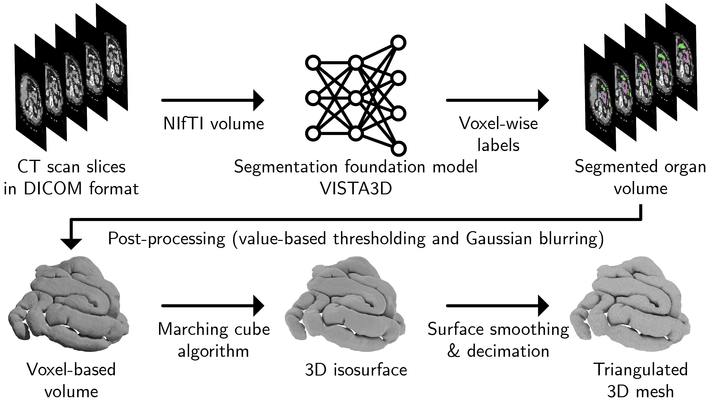
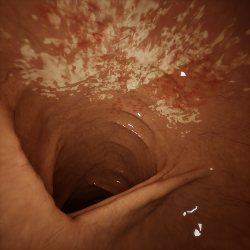
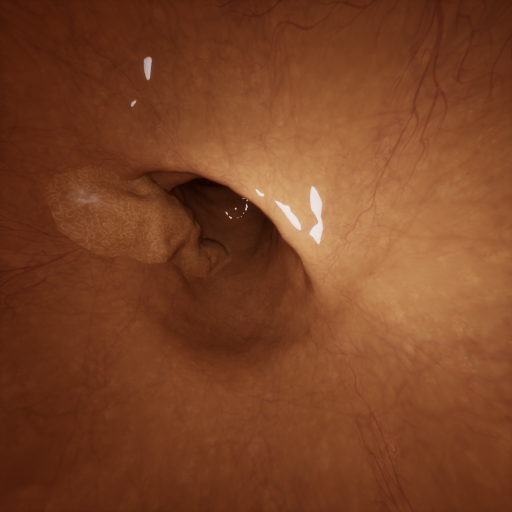

DepthRGB
Normal Mucosal Texture
Endoscopic examination of gastrointestinal organs increasingly relies on 3D computer vision techniques such as depth estimation, surface reconstruction, and missing region detection. Yet rigorous method development for endoscopy remains challenging, as ground-truth data cannot be readily acquired during clinical procedures. We present EndoX, a GPU-accelerated synthetic data generation (SDG) framework and interactive simulator for medical endoscopy that enables efficient generation of fully annotated datasets, minimizing the sim-to-real gap in algorithm development. EndoX automates anatomically accurate 3D mesh generation from computed tomography (CT) data and employs physics-based rendering to produce multimodal imagery—including RGB, depth, surface normals, optical flow, occlusion, and camera coverage maps—with precise ground-truth geometry. For validation, we constructed organ-specific datasets by navigating a virtual capsule endoscope through anatomically accurate CT-derived organ meshes, with sensor and lighting parameters configured to approximate real capsule endoscopes. Quantitative evaluations on depth estimation, pose estimation, and 3D Gaussian splatting demonstrate that models trained on EndoX data achieve competitive accuracy, and qualitative assessment confirms transferability to clinical endoscopy. The framework is designed for scalable deployment on GPU nodes via containerization. A sample dataset comprising 3 video sequences (12,000 frames) with paired ground-truth annotations and 3D models is available. The containerized headless version for high-throughput data generation will be publicly released upon acceptance.
We propose EndoX, a GPU-accelerated synthetic data generation framework and high-fidelity simulator for medical endoscopy that:



Normal Mucosal Texture

Pathological Texture

Polyp

The example scene in the sample dataset was reconstructed from CT colonography data (CC BY 3.0), with the mesh surface texture adopted from VRCaps. For each video sequence, we provide: (i) a triangulated 3D mesh reconstructed from CT data (Wavefront OBJ), and (ii) a vertex-wise coverage map in vertex indices array in .npz format.
For every frame, we provide the following annotations:
Depth: distance from the camera plane to the object surface, clamped to 0–100 mm, linearly scaled, encoded as a 16-bit grayscale image.
Surface normals: reported in world and camera coordinates; X, Y, Z components stored in R, G, B channels, each linearly mapped from [−1, 1] to [0, 65535] as a 16-bit color image.
Optical flow: per-pixel displacement between consecutive frames; R and G channels encode X- and Y-direction motion (±512 px), each linearly mapped to [0, 65535] as a 16-bit color image (the first frame carries no flow value).
Occlusion: an 8-bit binary mask within the 0–100 mm clipping range; pixels occluding other mesh faces set to 255, all others to 0.
Camera pose: per-frame world-space translation and rotation stored as tx, ty, tz, qx, qy, qz, qw (unit quaternion) in a text file.
Coverage map: vertex-wise visibility stored as an index array in .npz format.
EndoX_dataset/
├── colon/
│ ├── trajectory_1/
│ │ ├── colon.obj
│ │ ├── coverage_map/
│ │ ├── rgb/
│ │ │ ├── 0000.png
│ │ │ ├── 0001.png
│ │ │ └── ...
│ │ ├── depth/
│ │ ├── normal_world/
│ │ ├── normal_camera/
│ │ ├── optical_flow/
│ │ ├── occlusion/
│ │ └── camera_pose/
│ └── trajectory_2/
│ └── ...
└── small_intestine/
├── trajectory_1/
│ └── ...
└── trajectory_2/
└── ...| Organ | Sequence | # Frames | Modalities | Download |
|---|---|---|---|---|
| Small intestine | A | Placeholder | RGB, depth, normals, optical flow, occlusion, pose, coverage | Sample zip |
| Small intestine | B | Placeholder | RGB, depth, normals, optical flow, occlusion, pose, coverage | Sample zip |
| Small intestine | C | Placeholder | RGB, depth, normals, optical flow, occlusion, pose, coverage | Sample zip |
@inproceedings{endox2026,
title = {EndoX: A GPU-Accelerated Endoscopic Perception Simulation Framework},
author = {Kwan Tung Lam and Ping Shu Ho and Patt Phurtivilai and Ka Chun Cheung},
booktitle = {International Conference on Medical Image Computing and Computer-Assisted Intervention (MICCAI)},
year = {2026}
}